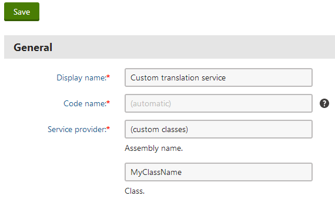

Loading custom classes from App_Code
By preparing custom classes that inherit from an appropriate base class, you can extend the functionality of Kentico. This approach allows you to implement the following types of objects:
Custom Smart search components:
Note – Using code libraries
We strongly recommend using separate assemblies (Code library projects) to store custom classes instead of the App_Code folder. Custom code libraries provide the following advantages:
Cleaner separation of custom code from the default code of the Kentico web project.
Compilation performance – the code of a separate project is compiled into a DLL and does not require runtime compilation that slows down the web project.
Better accessibility of your custom classes from external applications or projects (for example projects running automated tests).
Easier re-usability across multiple projects.
When using code libraries, you do NOT need to register custom classes as described in the section below.
Registering custom classes in the App_Code folder
If you decide to add custom classes into App_Code, you need to register each class to allow the system to load it:
Edit your custom class.
Add a using statement for the CMS namespace.
Add the RegisterCustomClass assembly attribute above the class declaration (for every App_Code class that you want to register).
using CMS;// Ensures that the system loads an instance of 'CustomClass' when the 'MyClassName' class name is requested.[assembly: RegisterCustomClass("MyClassName", typeof(CustomClass))]...public class CustomClass{ ...}The RegisterCustomClass attribute accepts two parameters:
The first parameter is a string identifier representing the name of the class.
The second parameter specifies the type of the class as a System.Type object. When the system requests a class whose name matches the first parameter, the attribute ensures that an instance of the given class is provided.
Once you have registered your custom classes, you can use them as the source for objects in the system. When assigning App_Code classes to objects in the administration interface, fill in the following values:
Assembly name: (custom_classes)
Class: must match the value specified in the first parameter of the corresponding RegisterCustomClass attribute

Assigning a custom App_Code class to a new translation service